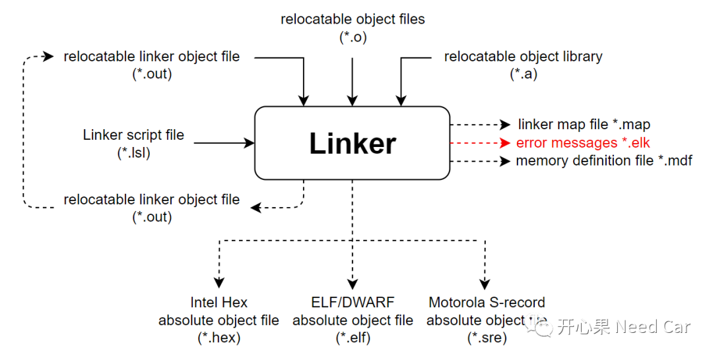
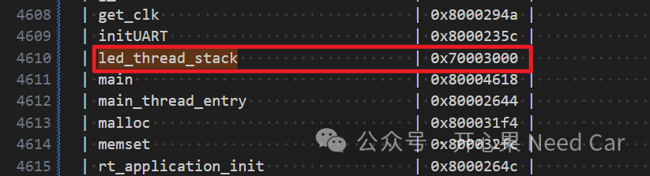
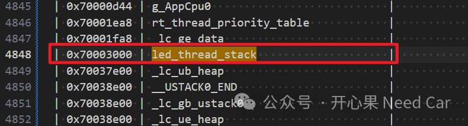

开心果 Need Car · 2024-01-09T07:08:00+08:00 · 微信原文
搞嵌入式开发的小伙伴，对编译器应该再熟悉不过了。如果没有编译器，就好比做饭没有锅。所以，如果要更好或者更高效的干活，自然需要对所使用的编译器有所了解才行。本文，基于Tasking，聊聊如何将变量放入指定内存。
1、链接器（Linker）的输入、输出

如上图，Linker需要依赖链接文件（*.lsl）将编译后的对象放入指定内存位置。因此，如果想把目标变量放入指定内存位置，多少会与链接文件扯上关系。
2、将变量放入指定内存位置的方法
__attribute__((section(".mySection"))) rt_uint8_t led_thread_stack[512];......section_layout :vtc:linear{group (ordered, contiguous, align = 1, attributes=rw, run_addr=0x70003000){select "(*.mySection)";}}......

rt_uint8_t led_thread_stack[512] __at(0x70003000);
往期精彩回顾
从CAN Transceiver角度，理解两帧网络管理报文唤醒网络的原理